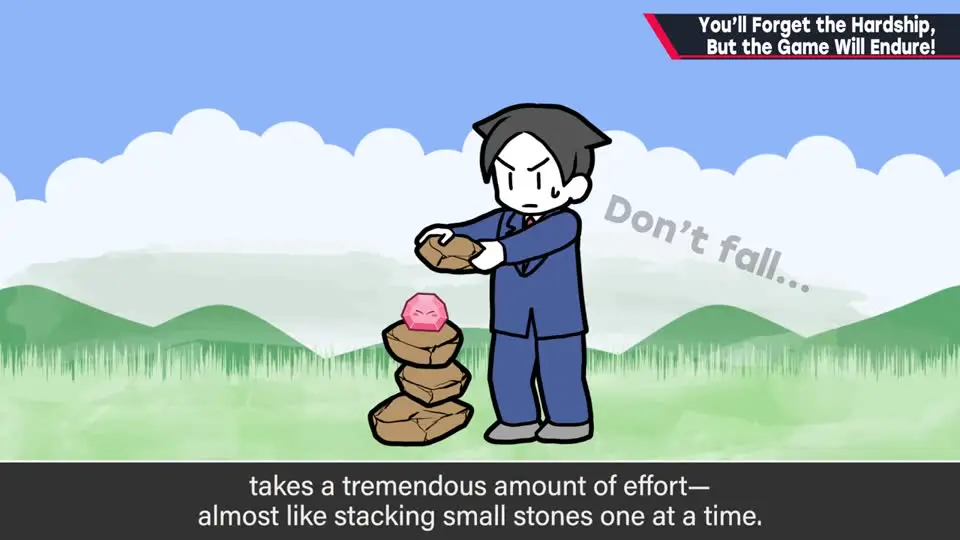
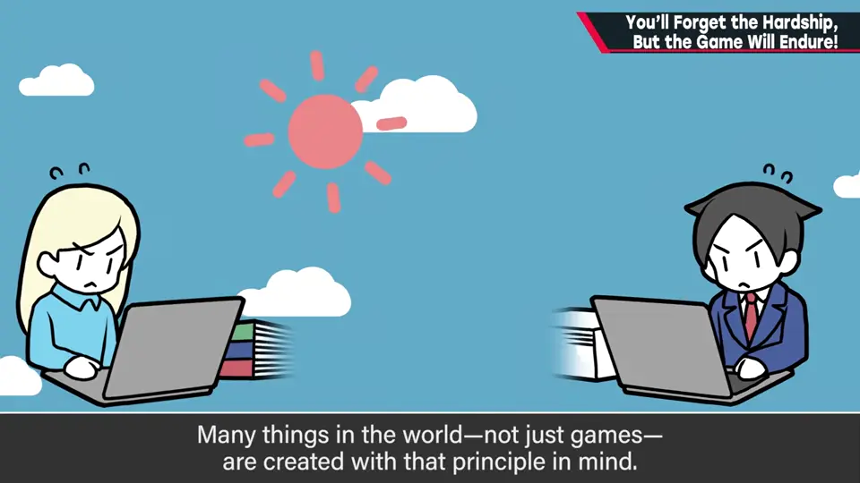
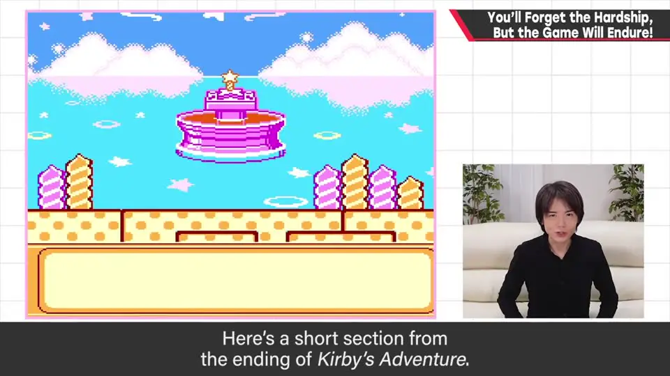
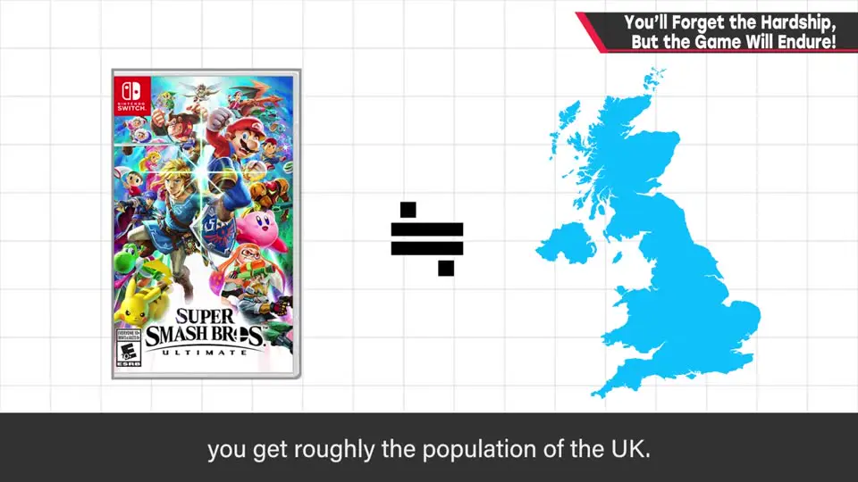

A-7 辛苦会忘，作品会留！
原标题：You'll Forget the Hardship, But the Game Will Endure!
速览
游戏开发是相当辛苦的工作，像一点点堆小石子般朴素。但只要很多人玩，辛苦就有回报：1,000 人玩，效果就是辛苦的 1,000 倍。为图轻松一再妥协，事后会后悔。辛苦会忘，作品会留——樱井至今忘不了《星之卡比 梦之泉物语》结局里「该用画面闪白而不是震动」的失误；《大乱斗 SPECIAL》至少卖出 2900 万份以上，约等于澳大利亚人口。这不是叫人吃无谓的苦，而是在最大限度提高效率的前提下努力为用户服务，尽可能不留遗憾。
1. 开发像一点点堆小石子 0:01
游戏开发总体上是相当辛苦的工作：在不按你意愿运行的计算机上，像一点点堆小石子那样完成海量工作，非常朴素。
但如果能让更多人玩到，似乎什么苦都能吃。樱井一直秉持：只要是很多人玩的东西，辛苦就会有回报。这无关卖得多不多——做游戏，玩家通常不止 10 人、100 人；1,000 人玩，效果就是辛苦的 1,000 倍；1 万人就是 1 万倍。
世上许多东西都是这样做出来的；我们被许多人的作品和服务支撑着——彼此彼此。反过来，为图轻松一再妥协，事后会后悔。


2. 辛苦会忘，作品会留 1:31
辛苦会忘，作品会留。——樱井说自己会忘记吃过什么苦，却很难忘掉作品里的失误。


- 到了这种规模，辛苦早已烟消云散——他感谢所有玩过的人。
- 这期不是说要吃无谓的苦，而是：在最大限度提高效率的前提下，努力为用户服务。
- 任何创作背后都有尚未谋面的买家；工作时想着如何回报他们。辛苦结束后会被遗忘，作品却一直留下——尽可能不留遗憾。
自测题
1. 樱井认为辛苦为什么会有回报？
只要很多人玩，辛苦就有回报：1,000 人玩，效果就是辛苦的 1,000 倍，1 万人就是 1 万倍——这与卖得多不多无关。 0:41
2. 樱井至今忘不了的作品失误是什么？
《星之卡比 梦之泉物语》结局的某一刻，不该用画面震动，而应该用画面闪白。 1:44
3. 这期是在鼓励吃苦吗？
不是。不是说要吃无谓的苦，而是在最大限度提高效率的前提下努力为用户服务，想着回报尚未谋面的买家，尽可能不留遗憾。 2:38